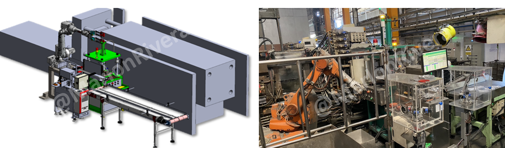

My Role
Responsibilities
Line planning, concept development, mechanical design, PLC programming, robot integration, transfer design and project leadership.
Robotics & Line Integration • Cambodia • 2020
Integrated robots, transfer systems, trimming, deburring and production monitoring into one coordinated manufacturing line.

My Role
Line planning, concept development, mechanical design, PLC programming, robot integration, transfer design and project leadership.
Challenge
Synchronize multiple processes while maintaining safe operation, stable flow, equipment communication and future scalability.
Solution
Developed centralized machine coordination with robot handling, automated transfer and real-time production monitoring.
Project Impact
Project Discussion